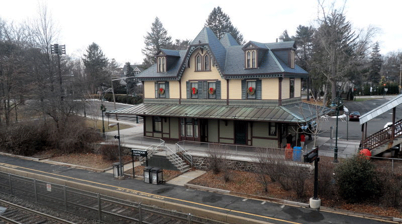
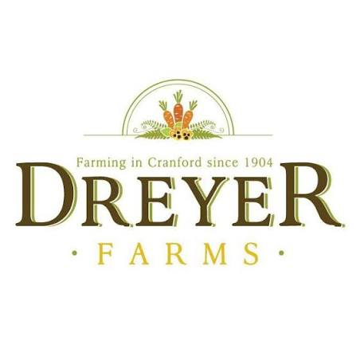

a New Jersey native,
a clarinetist in the UW Marching Band,
a lover of plants, memes, cooking, and knitting,
and a map enthusiast.
Read about my background and experience here.
Summer 2026
Spring 2025 - Present
Spring 2025 - Spring 2026
Spring 2024 - Fall 2024
Spring 2023
2022 - 2023
2022 - 2023
